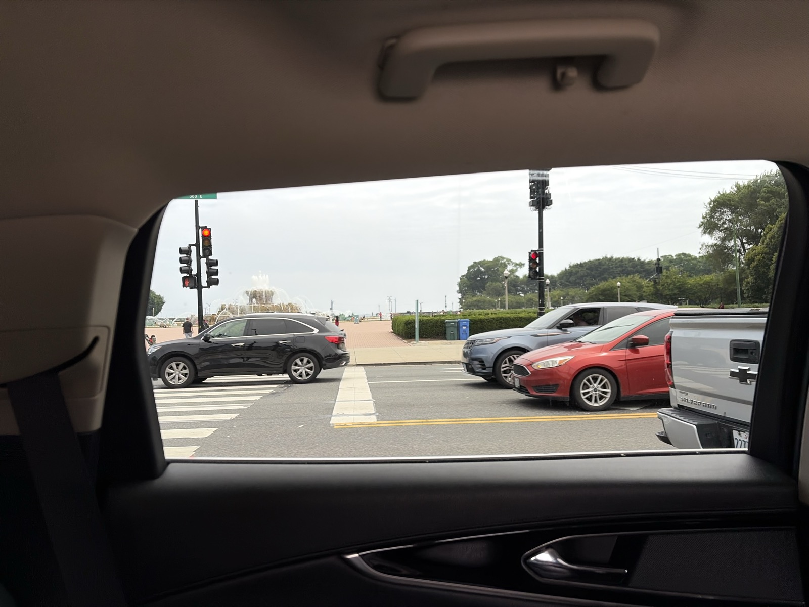

Sixty days, four worlds
*from flight confirmations on your calendar; Winnipeg's flights add roughly 3,100 more.
Four rooms of one summer
Winnipeg
Drake and Mel got married, and the Vegas-origin story you are part of came full circle on the prairie.
Walk in →
Wiscago
Chicago Pride with 55 years of history in the streets, then Eric's Wisconsin with the Dragon House family through the Fourth.
Walk in →
New York
The dense week: Breakaway under the K Bridge with Brennan, Foster's birthday, Games for Change, and a GGP table at Jongro BBQ.
Walk in →Seattle
You married Dane and Megan in the mountains, Joe flew up to stand beside you, and the week ended rolling dice inside Wizards.
Walk in →The Mirror Room
Five small hearts are hidden across the tour, one on each story page, holding words people said about you. Find all five, and this room opens. You hide roads for the people you love. This one was hidden for you.
You said it yourself, at Eric's kitchen table, at 2:47 in the morning: "I'm solving for others but am not investing in myself." Gordon, look at what the summer actually made you:
THE FLOOR, WITH BRENBREN · STILL MOVING
YOU AND JOE, THE LENNON EVENING · STILL MOVING
"You only get two lives, and the second one begins when you realize you only have one life." You wrote that for other people's weddings. It was always also about you.
What the summer was actually about
Every trip was a room where somebody trusted you with a role: guest of honor, family of choice, father, officiant, player one. The pages ahead hold the receipts, the photos, the quotes, and the things you were too busy living to notice.
Start with the peopleHow the relationships moved →